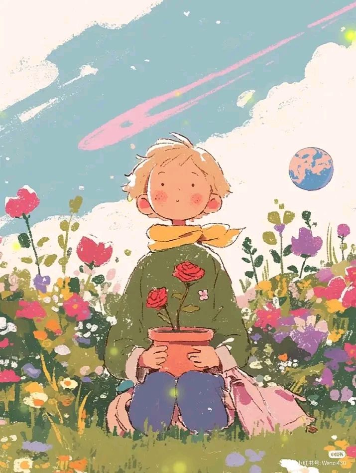
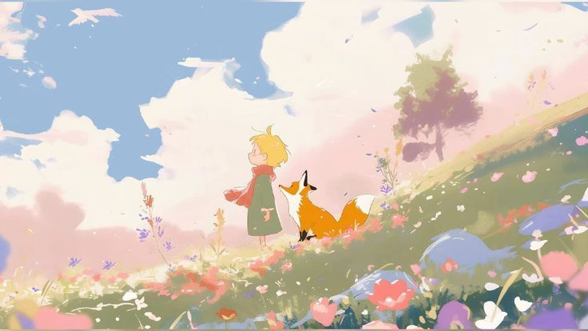

Step-by-Step Tutorial
How the rotoscope animation was created from scratch.

Select the source material, and make sure it has good video quality for easy tracing later on.

Add a new drawing layer on top of the reference. Lock the video layer to prevent accidental edits, then reduce its opacity to 40% so the tracing remains clearly visible.
Using the brush or pen tool, trace the subject's silhouette and key body landmarks on every other frame. Focus on capturing contour accuracy over detail at this stage.
Complete the remaining frames by interpolating between key poses. Use the onion-skin tool to ghost adjacent frames and maintain smooth, consistent motion arcs throughout.
Hide the reference layer and apply flat colors or stylized fills to the traced outlines. Vary line weights to add depth — thicker strokes for outer edges, thinner for interior details.
Export the animation as a video file and play it back alongside the original reference footage. Review timing, motion smoothness, and any frames that need refinement before final export.
Weekly Progress
A breakdown of what was accomplished each week throughout the project.

Studied rotoscoping techniques, selected the reference footage, and planned the animation scope and style direction.
Set up the Animate project, imported footage, and completed tracing for all major key frames in the sequence.
Completed all in-between frames, refined motion arcs, and ensured consistent line quality across the full animation.
Applied flat color fills, adjusted line weights, and added stylistic elements to define the final visual look.
Conducted final playback review, corrected remaining frame inconsistencies, and exported the finished animation at 1080p.